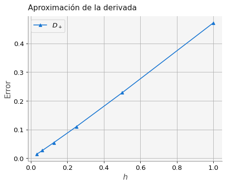
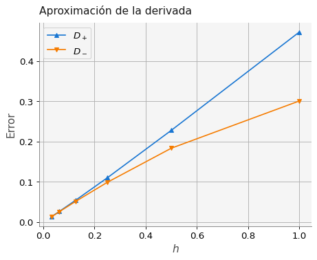
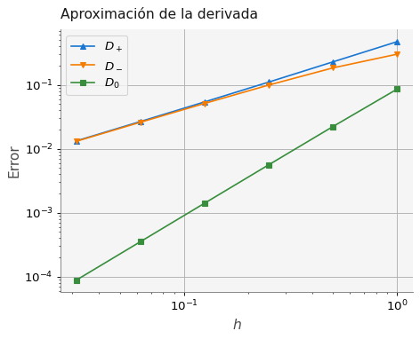
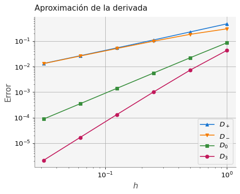
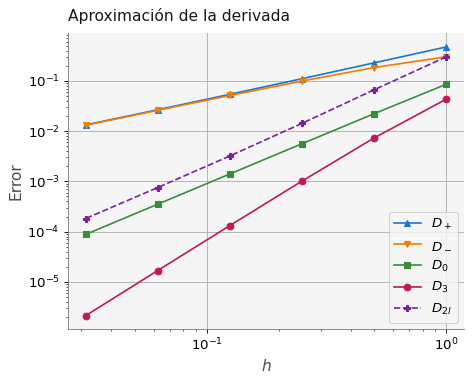
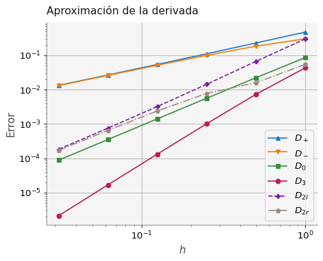

import numpy as np
import pandas as pd
import matplotlib.pyplot as plt
import macti.visual as mvis
from macti.evaluation import *4 Diferencias finitas: cálculo del error
Objetivo general - Implementar varias fórmulas de aproximación de la primera derivada y compararlas entre ellas mediante el cálculo del error.
Objetivos particulares - Revisar las fórmulas de aproximación de la primera derivada: Forward, Backward, Central. - Implementar funciones para calcular las fórmulas. - Calcular el error que introducen estas fórmulas. - Mostrar de manera gráfica el error. - Implementar funciones de varios órdenes para compararlas con las fórmulas anteriores.
MACTI-Analisis_Numerico_01 by Luis M. de la Cruz is licensed under Attribution-ShareAlike 4.0 International


Trabajo realizado con el apoyo del Programa UNAM-DGAPA-PAPIME PE101922
quizz = Quizz("q3", "notebooks", "local")La siguiente herramienta tiene como propósito mostras diferentes funciones y sus derivadas exactas así como el cálculo numérico de las derivadas usando varias aproximaciones. Puedes elegir la función y el tipo de aproximación. Después, puedes mover el punto donde se realiza la aproximación (punto azul) y el tamaño de la \(h\).
%run "./zinteractivo3.ipynb"<function FD.numericalDer(f, x0, h, aprox='All')>## Diferencias finitas hacia adelante (Forward).
$ _{h} $
La siguiente función de Python implementa la aproximación de diferencias finitas hacia adelante.
def forwardFD(u,x,h):
"""
Esquema de diferencias finitas hacia adelante.
Parameters
----------
u : función.
Función a evaluar.
x : array
Lugar(es) donde se evalúa la función
h : array
Tamaño(s) de la diferencia entre u(x+h) y u(x).
Returns
-------
Cálculo de la derivada numérica hacia adelante.
"""
return (u(x+h)-u(x))/h4.1 Ejemplo 1.
La derivada de \(\sin(x)\) es \(\dfrac{d \sin(x)}{d x} = \cos(x)\). Si evaluamos la derivada en \(x=1\) obtenemos: \(\cos(1.0) = 0.5403023058681398\).
Vamos a aproximar este valor usando diferencias finitas hacia adelante con la función forwardFD(). Dado que esta aproximación será mejor cuando \(h \to 0\), usaremos el siguiente conjunto de valores \(h\) para hacer varias aproximaciones:
\[ \begin{eqnarray*} H & = & \{h|h = \frac{1}{2^i} \; \text{para} \; i = 1,\dots,5 \} \\ & = & \{1.0, 0.5, 0.25, 0.125, 0.0625, 0.03125 \} \end{eqnarray*} \]
# Definimos un arreglo con diferentes tamaños de h:
N = 6
h = np.array([1 / 2**i for i in range(0,N)])
# Definimos un arreglo con valores de 1.0 (donde evaluaremos el cos(x)):
x = np.ones(N)
print('h = {}'.format(h))
print('x = {}'.format(x))h = [1. 0.5 0.25 0.125 0.0625 0.03125]
x = [1. 1. 1. 1. 1. 1.]Ahora usamos la función forwardFD() para aproximar la derivada de la función \(\sin(x=1.0)\):
forwardFD(np.sin, x, h)array([0.06782644, 0.312048 , 0.43005454, 0.48637287, 0.51366321,
0.52706746])El error absoluto entre la derivada exacta y la aproximación se puede calcular usando la fórmula:
\[ Error = || \cos(x) - D_+ \sin(x)|| \]
donde \(D_+\) representa la aplicación de la fórmula hacia adelante. Recuerda que la derivada de \(\sin(x)\) es \(\cos(x)\).
# Calculamos el error entre la derivada exacta y la derivada numérica:
ef = np.fabs(np.cos(x) - forwardFD(np.sin, x, h) )
print(ef)[0.47247586 0.2282543 0.11024777 0.05392943 0.0266391 0.01323485]# Colocamos la información de h y del error en un Dataframe y mostramos el resultado:
Error = pd.DataFrame(np.array([h, ef]).T,
columns=['$h$','$D_+$'])
Error| $h$ | $D_+$ | |
|---|---|---|
| 0 | 1.00000 | 0.472476 |
| 1 | 0.50000 | 0.228254 |
| 2 | 0.25000 | 0.110248 |
| 3 | 0.12500 | 0.053929 |
| 4 | 0.06250 | 0.026639 |
| 5 | 0.03125 | 0.013235 |
# Hacemos el gráfico del error vs h
plt.plot(h, ef, '^-', label='$D_+$')
plt.xlabel('$h$')
plt.ylabel('Error')
plt.title('Aproximación de la derivada')
plt.legend()
plt.grid()
plt.show()
## Diferencias finitas hacia atrás (Backward).
$ _{h} $
La siguiente función de Python implementa la aproximación de diferencias finitas hacia atrás.
def backwardFD(u,x,h):
"""
Esquema de diferencias finitas hacia atrás.
Parameters
----------
u : función.
Función a evaluar.
x : array
Lugar(es) donde se evalúa la función
h : array
Tamaño(s) de la diferencia entre u(x+h) y u(x).
Returns
-------
Cálculo de la derivada numérica hacia atrás.
"""
return (u(x)-u(x-h))/h4.2 Ejercicio 1.
Tomando como base el ejemplo de diferencias finitas hacia adelante, calcula el error entre la derivada exacta y la aproximación con diferencias finitas hacia atrás usando la fórmula:
\[ Error = || \cos(x) - D_- \sin(x)|| \]
donde \(D_-\) representa la aplicación de la fórmula hacia atrás.
# Calculamos el error entre la derivada exacta y la derivada numérica:
### BEGIN SOLUTION
eb = np.fabs( np.cos(x) - backwardFD(np.sin,x,h) )
file_answer = FileAnswer()
file_answer.write('1', eb, 'La implementación del error no es correcta, checa también los valores que estás comparando.')
### END SOLUTION
print(eb)Creando el directorio :/home/jovyan/macti_notes/notebooks/.ans/DerivadasNumericas/
Respuestas y retroalimentación almacenadas.
[0.30116868 0.18378859 0.09902659 0.05111755 0.02593572 0.01305898]quizz.eval_numeric('1', eb)----------------------------------------
1 | Tu resultado es correcto.
----------------------------------------# Agregamos la columna del error de diferencias finitas hacia atrás
Error['$D_-$'] = eb
Error| $h$ | $D_+$ | $D_-$ | |
|---|---|---|---|
| 0 | 1.00000 | 0.472476 | 0.301169 |
| 1 | 0.50000 | 0.228254 | 0.183789 |
| 2 | 0.25000 | 0.110248 | 0.099027 |
| 3 | 0.12500 | 0.053929 | 0.051118 |
| 4 | 0.06250 | 0.026639 | 0.025936 |
| 5 | 0.03125 | 0.013235 | 0.013059 |
# Hacemos el gráfico del error vs h
plt.plot(h, ef, '^-', label='$D_+$')
plt.plot(h, eb, 'v-', label='$D_-$')
plt.xlabel('$h$')
plt.ylabel('Error')
plt.title('Aproximación de la derivada')
plt.legend()
plt.grid()
plt.show()
## Diferencias finitas centradas.
$ _{h} $
La siguiente función de Python implementa la aproximación de diferencias finitas centradás.
def centeredFD(u,x,h):
"""
Esquema de diferencias finitas centradas.
Parameters
----------
u : función.
Función a evaluar.
x : array
Lugar(es) donde se evalúa la función
h : array
Tamaño(s) de la diferencia entre u(x+h) y u(x).
Returns
-------
Cálculo de la derivada numérica centrada.
"""
return (u(x+h)-u(x-h))/(2*h)4.3 Ejercicio 2.
Tomando como base el ejercicio 1, calcula el error entre la derivada exacta y la aproximación con diferencias finitas centradas usando la fórmula:
\[ Error = || \cos(x) - D_0 \sin(x)|| \]
donde \(D_0\) representa la aplicación de la fórmula de diferencias centradas.
# Metemos la información de h y del error en un Dataframe y mostramos el resultado:
### BEGIN SOLUTION
# Calculamos el error entre la derivada exacta y la derivada numérica:
ec = np.fabs( np.cos(x) - centeredFD(np.sin,x,h) )
file_answer.write('2', ec, 'La implementación del error no es correcta, checa también los valores que estás comparando.')
### END SOLUTION
print(ec)El directorio :/home/jovyan/macti_notes/notebooks/.ans/DerivadasNumericas/ ya existe
Respuestas y retroalimentación almacenadas.
[8.56535925e-02 2.22328579e-02 5.61058720e-03 1.40593842e-03
3.51690617e-04 8.79355346e-05]quizz.eval_numeric('2', ec)----------------------------------------
2 | Tu resultado es correcto.
----------------------------------------4.4 Ejercicio 3.
Tomando como base los ejemplos de diferencias finitas hacia adelante y hacia atrás, agrega una columna con los resultados del error de la aproximación de diferencias centradas en el DataFrame Error.
# Agregamos la columna del error de diferencias finitas centradas
# Error['...'] = ...
### BEGIN SOLUTION
Error['$D_0$'] = ec
Error
### END SOLUTION
Error| $h$ | $D_+$ | $D_-$ | $D_0$ | |
|---|---|---|---|---|
| 0 | 1.00000 | 0.472476 | 0.301169 | 0.085654 |
| 1 | 0.50000 | 0.228254 | 0.183789 | 0.022233 |
| 2 | 0.25000 | 0.110248 | 0.099027 | 0.005611 |
| 3 | 0.12500 | 0.053929 | 0.051118 | 0.001406 |
| 4 | 0.06250 | 0.026639 | 0.025936 | 0.000352 |
| 5 | 0.03125 | 0.013235 | 0.013059 | 0.000088 |
Observe que en este caso los errores son varios órdenes de magnitud más pequeños. Para hacer una gráfica más representativa usaremos escala loglog:
# Hacemos el gráfico del error vs h
plt.plot(h, ef, '^-', label='$D_+$')
plt.plot(h, eb, 'v-', label='$D_-$')
plt.plot(h, ec, 's-', label='$D_0$')
plt.xlabel('$h$')
plt.ylabel('Error')
plt.title('Aproximación de la derivada')
plt.legend()
plt.grid()
plt.loglog() # Definimos la escala log-log
plt.show()
Como se puede apreciar, la gráfica anterior muestra que la aproximación con diferencias finitas centradas es mejor, pues es de orden cuadrático.
4.5 Ejercicio 4. Aproximación con cuatro puntos
Implementar a siguiente fórmula de aproximación para el cálculo de la primera derivada y usarla para calcular la derivada del \(\sin(x)\) en \(x=1.0\) y compararla con las anteriores calculando el error y graficando.
\[ D_3 u = \dfrac{1}{6 h} \left[ 2u_{i+1} + 3u_{i} - 6u_{i-1} + u_{i-2} \right] \]
Hint: Recuerde que \(u_i = u(x)\), \(u_{i+1} = u(x+h)\), \(u_{i-1} = u(x-h)\) y \(u_{i-2} = u(x-2h)\).
# Implementación de D3
def D3(u,x,h):
### BEGIN SOLUTION
return (2*u(x+h)+3*u(x)-6*u(x-h)+u(x-2*h)) / (6*h)
### END SOLUTION### BEGIN SOLUTION
# Calculamos el error entre la derivada exacta y la derivada numérica:
e3 = np.fabs( np.cos(x) - D3(np.sin,x,h) )
file_answer.write('3', e3, 'La implementación del error no es correcta, checa también los valores que estás comparando.')
### END SOLUTION
print(e3)El directorio :/home/jovyan/macti_notes/notebooks/.ans/DerivadasNumericas/ ya existe
Respuestas y retroalimentación almacenadas.
[4.32871647e-02 7.31425947e-03 1.01447520e-03 1.32213104e-04
1.68339444e-05 2.12244935e-06]quizz.eval_numeric('3', e3)----------------------------------------
3 | Tu resultado es correcto.
----------------------------------------4.6 Ejercicio 5.
Tomando como base los ejemplos de diferencias finitas anteriores, agrega una columna con los resultados del error de la aproximación de diferencias con cuatro puntos en el DataFrame Error.
# Agregamos la columna del error de diferencias finitas centradas
### BEGIN SOLUTION
Error['$D_3$'] = e3
### END SOLUTION
Error| $h$ | $D_+$ | $D_-$ | $D_0$ | $D_3$ | |
|---|---|---|---|---|---|
| 0 | 1.00000 | 0.472476 | 0.301169 | 0.085654 | 0.043287 |
| 1 | 0.50000 | 0.228254 | 0.183789 | 0.022233 | 0.007314 |
| 2 | 0.25000 | 0.110248 | 0.099027 | 0.005611 | 0.001014 |
| 3 | 0.12500 | 0.053929 | 0.051118 | 0.001406 | 0.000132 |
| 4 | 0.06250 | 0.026639 | 0.025936 | 0.000352 | 0.000017 |
| 5 | 0.03125 | 0.013235 | 0.013059 | 0.000088 | 0.000002 |
# Hacemos el gráfico del error vs h
plt.plot(h, ef, '^-', label='$D_+$')
plt.plot(h, eb, 'v-', label='$D_-$')
plt.plot(h, ec, 's-', label='$D_0$')
plt.plot(h, e3, 'o-', label='$D_3$')
plt.xlabel('$h$')
plt.ylabel('Error')
plt.title('Aproximación de la derivada')
plt.legend()
plt.loglog() # Definimos la escala log-log
plt.grid()
plt.show()
4.7 Ejercicio 6. Aproximación con tres puntos (left).
Implementar a siguiente fórmula de aproximación para el cálculo de la primera derivada y usarla para calcular la derivada del \(\sin(x)\) en \(x=1.0\) y compararla con las anteriores.
\[ D_{2l}f^\prime = \frac{3 f_i - 4 f_{i-1} + f_{i-2}}{2h} \]
# Implementación
def D2l(u,x,h):
### BEGIN SOLUTION
return (3*u(x) - 4*u(x-h) + u(x-2*h)) / (2*h)
### END SOLUTION### BEGIN SOLUTION
# Calculamos el error entre la derivada exacta y la derivada numérica:
e2l = np.fabs( np.cos(x) - D2l(np.sin,x,h) )
file_answer.write('4', e2l, 'La implementación del error no es correcta, checa también los valores que estás comparando.')
### END SOLUTION
print(e2l)El directorio :/home/jovyan/macti_notes/notebooks/.ans/DerivadasNumericas/ ya existe
Respuestas y retroalimentación almacenadas.
[3.01168679e-01 6.64084941e-02 1.42646000e-02 3.20851614e-03
7.53883067e-04 1.82238417e-04]quizz.eval_numeric('4', e2l)----------------------------------------
4 | Tu resultado es correcto.
----------------------------------------4.8 Ejercicio 7.
Tomando como base los ejemplos de diferencias finitas anteriores, agrega una columna con los resultados del error de la aproximación de diferencias con tres puntos-left en el DataFrame Error.
# Colocamos la información de h y del error en un Dataframe y mostramos el resultado:
### BEGIN SOLUTION
Error['$D_{2l}$']=e2l
### END SOLUTION
Error| $h$ | $D_+$ | $D_-$ | $D_0$ | $D_3$ | $D_{2l}$ | |
|---|---|---|---|---|---|---|
| 0 | 1.00000 | 0.472476 | 0.301169 | 0.085654 | 0.043287 | 0.301169 |
| 1 | 0.50000 | 0.228254 | 0.183789 | 0.022233 | 0.007314 | 0.066408 |
| 2 | 0.25000 | 0.110248 | 0.099027 | 0.005611 | 0.001014 | 0.014265 |
| 3 | 0.12500 | 0.053929 | 0.051118 | 0.001406 | 0.000132 | 0.003209 |
| 4 | 0.06250 | 0.026639 | 0.025936 | 0.000352 | 0.000017 | 0.000754 |
| 5 | 0.03125 | 0.013235 | 0.013059 | 0.000088 | 0.000002 | 0.000182 |
# Hacemos el gráfico del error vs h
plt.plot(h, ef, '^-', label='$D_+$')
plt.plot(h, eb, 'v-', label='$D_-$')
plt.plot(h, ec, 's-', label='$D_0$')
plt.plot(h, e3, 'o-', label='$D_3$')
plt.plot(h, e2l, 'P--', label='$D_{2l}$')
plt.xlabel('$h$')
plt.ylabel('Error')
plt.title('Aproximación de la derivada')
plt.legend()
plt.loglog() # Definimos la escala log-log
plt.grid()
plt.show()
4.9 Ejercicio 6. Aproximación con tres puntos (right).
Obtener los coeficientes \(A\), \(B\) y \(C\) para una aproximación del siguiente tipo:
\[ D_{2r} f^\prime = A f_i + B f_{i+1} + C f_{i+2} \]
y luego implementar la fórmula y graficarla junto con los resultados anteriores.
# Implementación
def D2r(u,x,h):
### BEGIN SOLUTION
return (-3*u(x) + 4*u(x+h) - u(x+2*h)) / (2*h)
### END SOLUTION### BEGIN SOLUTION
# Calculamos el error entre la derivada exacta y la derivada numérica:
e2r = np.fabs( np.cos(x) - D2r(np.sin,x,h) )
file_answer.write('5', e2r, 'La implementación del error no es correcta, checa también los valores que estás comparando.')
file_answer.to_file('q3')
### END SOLUTION
print(e2r)El directorio :/home/jovyan/macti_notes/notebooks/.ans/DerivadasNumericas/ ya existe
Respuestas y retroalimentación almacenadas.
[0.05447393 0.01596726 0.00775877 0.0023889 0.00065123 0.0001694 ]quizz.eval_numeric('5', e2r)----------------------------------------
5 | Tu resultado es correcto.
----------------------------------------4.10 Ejercicio 7.
Tomando como base los ejemplos de diferencias finitas anteriores, agrega una columna con los resultados del error de la aproximación de diferencias con tres puntos-right en el DataFrame Error.
# Colocamos la información de h y del error en un Dataframe y mostramos el resultado:
### BEGIN SOLUTION
Error['$D_{2r}$'] = e2r
### END SOLUTION
Error| $h$ | $D_+$ | $D_-$ | $D_0$ | $D_3$ | $D_{2l}$ | $D_{2r}$ | |
|---|---|---|---|---|---|---|---|
| 0 | 1.00000 | 0.472476 | 0.301169 | 0.085654 | 0.043287 | 0.301169 | 0.054474 |
| 1 | 0.50000 | 0.228254 | 0.183789 | 0.022233 | 0.007314 | 0.066408 | 0.015967 |
| 2 | 0.25000 | 0.110248 | 0.099027 | 0.005611 | 0.001014 | 0.014265 | 0.007759 |
| 3 | 0.12500 | 0.053929 | 0.051118 | 0.001406 | 0.000132 | 0.003209 | 0.002389 |
| 4 | 0.06250 | 0.026639 | 0.025936 | 0.000352 | 0.000017 | 0.000754 | 0.000651 |
| 5 | 0.03125 | 0.013235 | 0.013059 | 0.000088 | 0.000002 | 0.000182 | 0.000169 |
# Hacemos el gráfico del error vs h
plt.plot(h, ef, '^-', label='$D_+$')
plt.plot(h, eb, 'v-', label='$D_-$')
plt.plot(h, ec, 's-', label='$D_0$')
plt.plot(h, e3, 'o-', label='$D_3$')
plt.plot(h, e2l, 'P--', label='$D_{2l}$')
plt.plot(h, e2r, 'p-.', label='$D_{2r}$')
plt.xlabel('$h$')
plt.ylabel('Error')
plt.title('Aproximación de la derivada')
plt.legend()
plt.loglog() # Definimos la escala log-log
plt.grid()
plt.show()